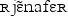
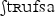

Des exemples pour Natallia et Linda
Salut! Je fais des exemples ici parce que je croix que ma courriel n'a pas inclu les caractères que je voulais.
J'ai trouvé le a nasal correcte: ɑ̃. Je voulais savoir si ce caractère, qui se trouve dans votre article, devrait-être dans le table au fin aussi. Il y a déjà ã. Devrait le premier remplacer le deuxième?Je comprends l'enchaînement, ma question etait à propos encore de la caractère utilisé pour le representer. Je vois "de bonne_humeur" avec ce qu'on dit en anglais un "underscore", mais je vois aussi "rien‿à faire" avec un "undertie". Devrait le premier avoir aussi un "undertie" au lieu du "underscore"?- J'ai trouvé un caractère qui peut-être est correcte pour le liason: "de bonne␣humeur". Que pensez-vous?
Merci!
Pour comparer quelques mots
| Image |
Unicode |
Notes |
|
paʀlmwezɑ̃pɔ |
Notez le caractère 'a' avec l'accent. Est-il le mème chose? |
|  |
ʀjɛ̃nafɛʀ |
|  |
ʃtʀufsa |
En-ligne
Image
pour signifier donne-le-moi et [] en lieu de ne m’en parle pas!
Unicode
pour signifier donne-le-moi et [paʀlmwezɑ̃pɔ] en lieu de ne m’en parle pas!